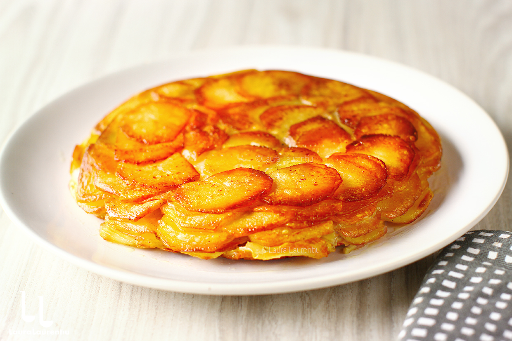

Cartofi Anna – rețeta clasică de Pomme Anna,

Pomme Anna (în franceză) sau cartofi Anna, rețetă clasică franțuzească
de cartofi în straturi. Rețeta de cartofi Anna conține doar două ingrediente
de bază, unt și cartofi, dar iese delicioasă, cu crusta crocantă și miezul cremos.
Încearcă să-i prepari și tu, urmând rețeta video de mai jos!
Pomme Anna sau cartofi Anna, în traducere, este o rețetă clasică franțuzească,
plină de savoare și cu o textură cu totul specială, care nu conține decât cartofi,
dintr-un soi bogat în amidon, și unt gras din belșug. Evident, mai conține și sare
și piper. Acești cartofi extrem de gustoși se pare că au apărut în Franța celei a
doua jumătăți a secolului al XIX-lea, în epoca imperiului lui Napoleon al III-lea.
Creatorul lor este general acceptat ca fiind chef-ul Adolphe Dugléré, unul dintre
elevii celebrului bucătar Carême. Fiind chef-ul unuia dintre cele mai la modă rest
aurante ale Parisului, în perioada respectivă, Café Anglais, se pare că Dugléré a d
edicat creația unei frumoase doamne, celebre în epocă.
Igrediente:
- 700 de grame de cartofi
- 100 de grame de unt
- sare și piper după gust
Mod de preparare:
- Spală foarte bine cartofii întregi (pe coajă). Usucă-i bine și lasă-i deoparte.
- Topește untul într-o crăticioară. Când se înfierbântă, culege rapid toată spum
a de la suprafața untulu
i. Imediat, strecoară untul printr-o sită fină și colectează-l într-un castronel.
- Pornește cuptorul și fixează-l la 200°C static sau 190°C ventilat.
- Alege o tigaie așa cum am arătat mai sus. Unge-o bine în interior, peste tot, cu unt topit.
- Curăță 2-3 cartofi, adică atâția câți se pot felia și aranja în tigaie, înainte s
ă se oxideze. Cartofii NU se mai spală cu apă (de aceea e i
mportant să fie bine spălați de la început). Apa nu mai trebuie să-i atingă, pen
tru că amidonul pe care îl conțin este
foarte important pentru acești cartofi Anna. Practic, amidonul din cartofi leagă preparatul.
- Feliază cartofii curățați în felii de 2-3 mm, cu unul dint
re instrumentele specificate mai sus. Aranjează feliile în tigaie, în cercuri conc
entrice, suprapunându-le puțin, cât să facă priză. Cond
imentează puțin fiecare strat cu sare și piper și stropește din abundență cu untul clarifiat.
- Repetă pașii 5 și 6 până ai epuizat cartofii și ai form
at toate straturile, în tigaie. Presează bine deasupra ultimului strat, pe
toată suprafața. Condimentează și stropește cu tot untul rămas.
- Pune tigaia pe plită și pornește-o, la foc mediu (nu trebuie să fie iute focul
). Prăjește primul strat al acestor cartofi Anna timp de 10 mi
nute. Acoperă cu capacul și dă preparatul la cuptor, la 200°C static sau 190°C ventilat.
- După 25 de minute, îndepărtează capacul și gătește în continuare cartofii timp de 10-15, descoperiți. Poți v
erifica dacă sunt gata străpungându-i cu o scobitoare. Trebuie să fie bine pătrunși.
- Acoperă tigaia cu o farfurie mare și, dintr-o singură mișcare, întoarce prepa
ratul cu partea superioară pe farfurie. Această parte a preparatului, care acum e
în contact direct cu farfuria, nu este rumenă! Cartofii Anna se lasă să alunece din
farfuria înapo
i în tigaie. În tot acest timp, tigaia e super fierbinte, atenție mare cum o manipulezi!
- Pune tigaia pe plită, pe foc mediu. Prăjește baza preparatului timp de 5-6 m
inute, apoi acoperă din nou cu far
furia, răstoarnă și servește acești cartofi Anna imediat, fierbinți.